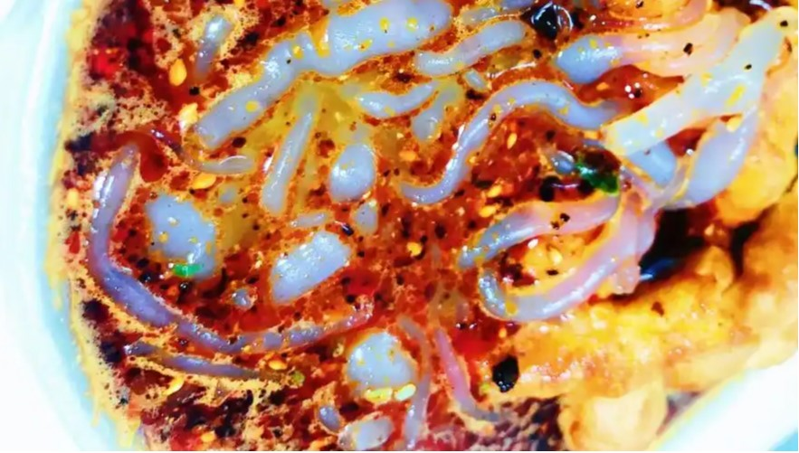
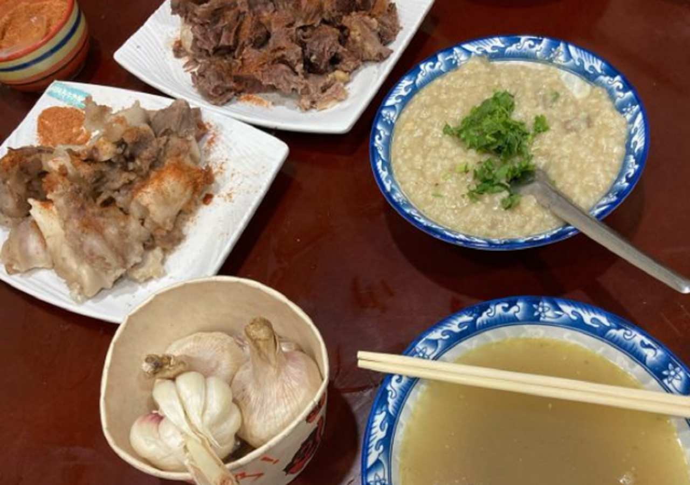

❮
❯
岷县简介
岷县，隶属于甘肃省定西市，位甘肃省南部，定西市南部，地处青藏高原边缘，是甘南草原向黄土高原、陇南山地的过渡地带，境内海拔2040～3754米，素有“陇原旱码头”之称；气候属温带半湿润向高寒湿润气候过渡带，为高原性大陆气候，低温干燥，自然灾害频发，是7·22定西地震的重灾县。总面积3578平方千米； [24]截至2023年末，岷县常住人口41.89万人。 [13]截至2023年6月，岷县辖15个镇、3个乡。 [14]岷县人民政府驻岷阳镇。
岷县建制最早可追溯到秦王八年（前239），时称临洮，是秦长城的西部起点，西魏大统十年（544年），始置岷州，民国二年（1913年），改为岷县，因境内有岷山而得县名，1985年后，划归定西管辖。 [15]岷县是马家窑文化、齐家文化、寺洼文化的发祥地之一； [16]岷县盛产当归、红芪、黄芪、党参等中药材238种，其中以“岷归”最为闻名，是“中国当归之乡”“中国洮砚之乡”“中国花儿之乡”和“联合国民歌考察采录基地”； [16]岷县景点有狼渡滩湿地草原、双燕生态景区、岷州会议会址等。地方特产有岷县当归，蕨麻猪，纹党参等。2020年11月21日，岷县退出贫困县序列。 [
2023年，岷县地区生产总值完成69.43亿元，按不变价格算，同比增长7.2%。其中：第一产业增加值14.55亿元，同比增长5.9%；第二产增加值9.14亿元，同比增长14.7%；第三产业增加值45.74亿元，同比增长6.5%。三次产业结构比为20.9:13.2:65.9。
岷州快讯
2024-11-08
记录生活·传递美好”2024年岷县“青苗会”暨民俗摄影展正式开幕
2024-11-11
“国家级非遗项目：岷县巴当舞服饰全新亮相
2024-10-24
《河西宝卷》《岷县宝卷》交流座谈会在临泽县文化馆功举办
2024-10-25
「馆际交流 互学互鉴」岷县文体广电和旅游局赴嘉峪关市文化馆开展馆际交流
2024-10-25
2024年甘肃岷县文化旅游赛马节开幕
岷县特色美食
岷州点心
烧鸡
攒盘

粉鱼

糊糊
面片
岷州点心
烧鸡
攒盘
粉鱼
糊糊
面片